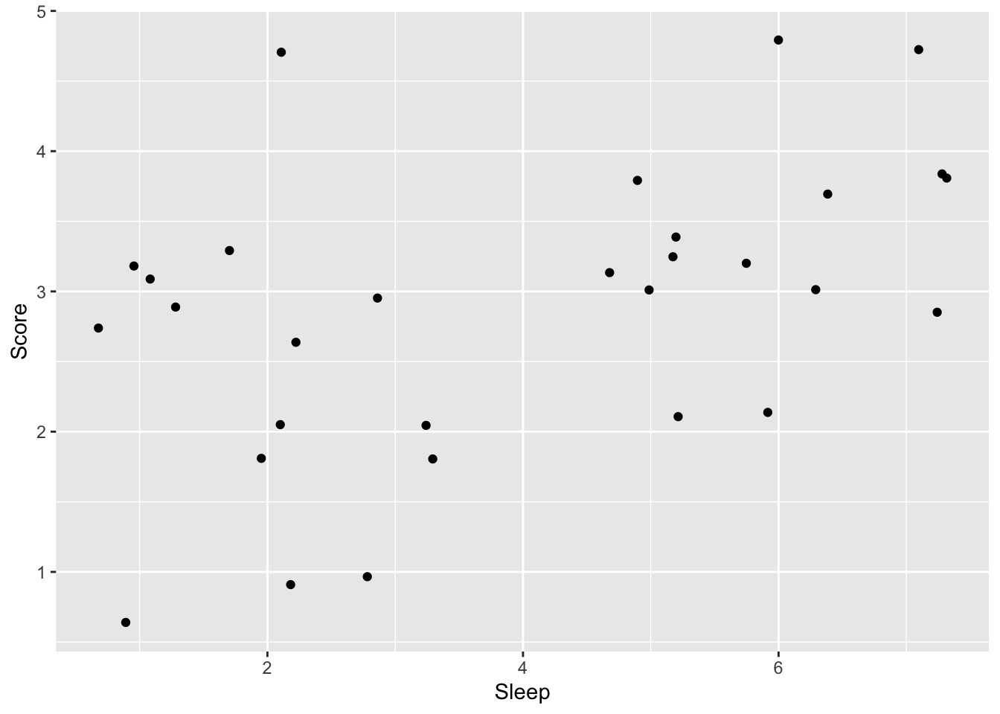

Chapter 16 一般化線形モデル（複数カテゴリの分析）
応答変数が2つのカテゴリの場合においては、ロジスティック回帰モデルを用いることを学んできた。では、応答変数が3つ以上のカテゴリの場合にはどのようなモデルを想定すればよいのだろうか。
この章では更に一般化線形モデルの一部である順序ロジスティック回帰と多項ロジスティック回帰について学び、複数のカテゴリを持つ応答変数を扱う方法について理解していく。
- 順序ロジスティック回帰
- 多項ロジスティック回帰
16.1 準備
可視化のためのggplot2パッケージに加え、ordinal、nnetパッケージを使う。
ordinalパッケージは順序ロジスティック回帰のときに、nnetパッケージは多項ロジスティック回帰のときに必要になる。初めて使う際には、事前にインストールが必要なので注意。
16.2 カテゴリカル変数の種類
第3章で、カテゴリカル変数は順序尺度と名義尺度に区別されることを学んだ。
順序尺度とは、順序関係のあるカテゴリカル変数である。「優、良、可、不可」といった成績、「1. 賛成、2. どちらでもない、3. 反対」といった尺度などは順序尺度に該当する。順序関係はあるが、得点を用いて演算に用いることは出来ないので、変数の種類としては数値ではなくカテゴリカル変数である。
名義尺度とは、順序関係のないカテゴリカル変数である（例：性別[男、女]、血液型、出身地など）。
順序ロジスティック回帰は応答変数が順序変数の場合、多項ロジスティック回帰は応答変数が名義尺度の場合に用いられる。
16.3 順序ロジスティック回帰
16.3.1 例題
例えば、Scoreを試験の成績を意味する順序尺度として「1=不可、2=可、3=良、4=優、5=秀」の値を取るとする。この成績Scoreに対して、試験前日の睡眠時間Sleepが及ぼす影響を検討するとしよう。
###サンプルデータの作成
Sleep = c(6,1,5,2,5,6,2,6,2,5,6,2,5,3,5,3,3,7,2,7,6,1,2,1,7,1,1,7,5,3)
Score = c(3,3,3,2,3,3,5,5,2,2,2,3,4,1,3,2,3,5,1,4,4,3,3,3,4,1,3,3,3,2)
sample_ordered = data.frame(Score = Score, Sleep = Sleep)
head(sample_ordered)## Score Sleep
## 1 3 6
## 2 3 1
## 3 3 5
## 4 2 2
## 5 3 5
## 6 3 6
成績の得点は順序尺度なので、連続量として正規分布に従うという前提を置くのは適切ではない。二値のカテゴリカル変数の場合は二項分布を用いるロジスティック回帰で検討できたが、3つ以上のカテゴリを持つ変数の場合はどうすればよいか？
16.3.2 順序ロジスティック回帰モデルの詳細
累積確率と累積ロジット
順序のあるカテゴリカル変数を扱う場合には、累積確率（cumulative probability）で各変数が生じる確率を表現する。累積確率とは、順序変数のある値以下が生じる確率のことをいう。例えば、\(y\)が\(k\)以下の値を取る累積確率を\(Pr(y≤k)\)と表現する。 カテゴリ\(k\)が生じる確率\(p_{k}\)とすると、\(p_{k}\)は累積確率を用いて以下の式で表現することができる。
\[ p_{k}=Pr(y≤k)−Pr(y≤k−1) \]
例えば試験の成績（1=不可、2=可、3=良、4=優、5=秀）を\(y\)として考えると、\(Pr(y≤3)\)は、試験の成績が1, 2もしくは3である確率を示している。試験の成績が3である確率\(p_{3}\)は、累積確率\(Pr(y≤3)\)から累積確率\(Pr(y≤2)\)を引くことで求めることができる。
なお、カテゴリの最大値が出る確率は、全体の確率から引けば求まる。例えば、試験の成績が5である確率\(p_{5}\)は累積確率\(Pr(y≤5)-Pr(y≤4)\)を計算しなくとも、\(1-Pr(y≤4)\)で求めることができる。
線形予測子との関係
カテゴリ\(k\)が得られる累積確率\(Pr(y ≤ k)\)は、K-1個の切片\(\alpha_{k}\)で示すことができる（上で述べたように、最大カテゴリの確率は1から\(Pr(y≤K-1)\)を引けば求まるので、すべての確率を表現するために切片をK個用意する必要はない）。\(\alpha_{k}\)は累積確率を区切るポイントを意味し、カットポイント(cutpoint)とも呼ばれる。
\[ Pr(y≤k) = \frac{\exp(\alpha_{k})}{1+\exp(\alpha_{k})} \]
更に、予測変数の効果（傾き）を考慮すると、累積確率は以下のように表現できる。
\[ \eta = \beta x\\ Pr(y ≤ k) = \frac{\exp(\alpha_{k} - \eta)}{1+\exp(\alpha_{k} - \eta)} \]
以下のように書き換えることもできる（左辺を累積確率の対数オッズ、右辺を線形の式としたもの）。
\[ \eta = \beta x\\ \log\frac{Pr(y ≤ k)}{Pr(y > k)} = \alpha_{k} - \eta \]
各切片から傾きの効果を引いているところに注意する必要がある。引くことによって、予測変数の値が大きいほど、累積確率の値が低くなる。言い換えれば、\(Pr(y>k)\)が大きくなる。つまり、傾きの効果を引くことによって、予測変数の値が大きくなるほど、より大きい値のカテゴリが生じる確率が大きくなることを表現できる。
このように、順序ロジスティック回帰のモデルでは、各カテゴリの累積確率を決定づける切片\(\alpha_{k}\)と傾き\(\beta\)を用いて、各カテゴリが生じる確率を推定する。
16.3.3 Rでの順序ロジスティック回帰
Rで順序ロジスティック回帰を行うには、外部パッケージの関数を利用する。以下では、ordinalパッケージに含まれているclm関数を使って、先ほど作成したサンプルデータsample_orderedで順序ロジスティック回帰を行う。
16.3.4 変数の因子型への変換
解析の前に、Rで順序尺度を扱う場合は、変数を順序付きの因子型(factor)変数にする必要がある。factor()もしくはordered()のいずれかの方法で作成する。
16.3.5 解析
応答変数を順序付きの因子型変数に変更したら、ordinalパッケージに含まれているclm()で解析する。lm()と同じ要領で、応答変数~予測変数のモデルを書けば結果を出力してくれる。
## formula: Score ~ 1 + Sleep
## data: sample_ordered
##
## link threshold nobs logLik AIC niter max.grad cond.H
## logit flexible 30 -38.90 87.81 6(0) 2.11e-11 5.3e+02
##
## Coefficients:
## Estimate Std. Error z value Pr(>|z|)
## Sleep 0.4422 0.1827 2.421 0.0155 *
## ---
## Signif. codes: 0 '***' 0.001 '**' 0.01 '*' 0.05 '.' 0.1 ' ' 1
##
## Threshold coefficients:
## Estimate Std. Error z value
## 1|2 -0.7339 0.8376 -0.876
## 2|3 0.7129 0.7439 0.958
## 3|4 3.1642 0.9920 3.190
## 4|5 4.3135 1.1377 3.79116.4 多項ロジスティック回帰
16.4.1 例題
高校生が進学先（大学の学部）を選択する場合を例として考える。学部の種類（文学部、経済学部、理学部など）には順序関係はないので、学部の種類は名義尺度である。性別、高校のときの成績が学科選択に及ぼす影響を検討する。
###サンプルデータの作成
set.seed(1)
Male = c(rep(0:1, 25))
Grade = rnorm(n=50, 5, 2)
Faculty = c(rep("Literature", 15), rep("Economics", 20), rep("Physical", 15))
sample_mnl = data.frame(Faculty = Faculty, Male = Male, Grade = Grade)
head(sample_mnl)## Faculty Male Grade
## 1 Literature 0 3.747092
## 2 Literature 1 5.367287
## 3 Literature 0 3.328743
## 4 Literature 1 8.190562
## 5 Literature 0 5.659016
## 6 Literature 1 3.359063Maleは性別（男=1,
女=0）、Gradeは高校の時の成績、Facultyは志望学部を意味する変数とする。Facultyには、Literature（文学部）、Economics（経済学部）、Physical（理学部）の3種類のカテゴリがあるとする。
先ほどの成績（1=不可、2=可、3=良、4=優、5=秀）の例とは異なり、今回の予測の対象となる応答変数は順序関係のないカテゴリカル変数（名義尺度）であった。順序関係がないカテゴリカル変数の場合はどうすればよいか？
16.4.2 多項ロジスティック回帰モデルの詳細
多項ロジスティック回帰では基準となるカテゴリを設定し、基準カテゴリと比べて各カテゴリが生じやすいかを推定する複数のモデルを設定する。
例えば、経済学部(Economics)を基準カテゴリとする。他のカテゴリ(Literature, Physical)が生じる確率を線形の式で表した例を以下に示す。
\[ \log\frac{Pr(Literature)}{Pr(Economics)}= \alpha_{1} + \beta_{1,1} Male + \beta_{2,1} Grade \\ \log\frac{Pr(Physical)}{Pr(Economics)}= \alpha_{2} + \beta_{1,2} Male + \beta_{2,2} Grade \\ \]
多項ロジスティック回帰では、カテゴリごとに異なる線形予測子を設定し、それぞれ異なる切片と傾きの値を推定する。
16.4.3 Rでの多項ロジスティック回帰
Rには多項ロジスティック回帰を行うための関数として、nnetパッケージのmultinom()関数がある。lm()と同じ要領でモデルを記述すると、推定結果を出力してくれる。先ほど作ったサンプルデータsample_mnlで、多項ロジスティック回帰を行ってみる。
## # weights: 12 (6 variable)
## initial value 54.930614
## final value 54.309165
## converged## Call:
## nnet::multinom(formula = Faculty ~ 1 + Male + Grade, data = sample_mnl)
##
## Coefficients:
## (Intercept) Male Grade
## Literature -0.3637660 -0.1228603 0.02625298
## Physical -0.7764841 0.1628974 0.07759005
##
## Std. Errors:
## (Intercept) Male Grade
## Literature 1.214153 0.6892241 0.2085267
## Physical 1.243610 0.6894528 0.2104109
##
## Residual Deviance: 108.6183
## AIC: 120.6183Coeffficientsの部分に、係数の推定結果が出力される。このモデルではEconomicsが基準カテゴリとなっている（デフォルトで、アルファベット順で一番はじめに出てくるカテゴリが基準となる）。Literatureの部分に出力されるのが上の式でいう\(\alpha_{1}\),
\(\beta_{1, 1}\),
\(\beta_{2, 1}\)に、Physicalの部分に出力されるのが\(\alpha_{2}\),
\(\beta_{1, 2}\), \(\beta_{2, 2}\)に相当する。
Literatureの予測変数の傾きの推定値は、基準カテゴリ（Economics）と比べた上でのその予測変数の効果を意味する（その予測変数が1単位変化したときのLiteratureとEconomicsの対数オッズの変化量）。
このように、多項ロジスティック回帰の係数はある基準カテゴリと比較した上での効果を意味するため、解釈は複雑になる。
multinom()ではp値を出力してくれないので、求めたい場合は自分で計算する必要がある。以下には、z
scoreを元に計算する方法を示す。
#p値の出力
z = summary(result_mnl)$coefficients/summary(result_mnl)$standard.errors
p = (1 - pnorm(abs(z), mean = 0, sd = 1)) * 2
p## (Intercept) Male Grade
## Literature 0.7644787 0.8585197 0.8998131
## Physical 0.5323786 0.8132228 0.7123104